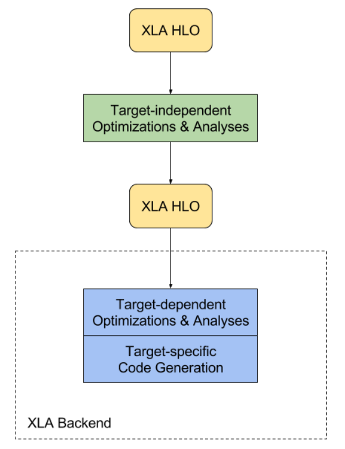
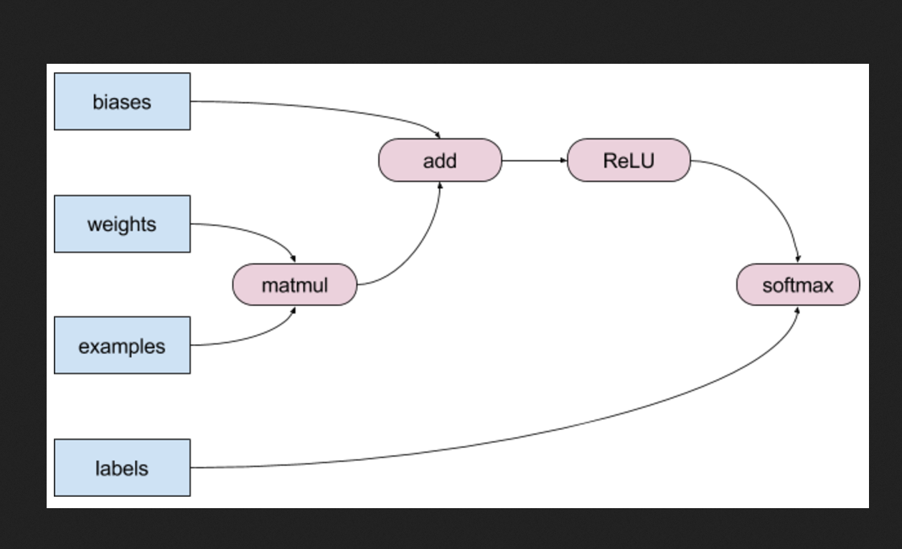
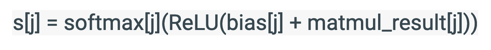

An Introduction to jax
Pierre Glaser, Gatsby Computational Neuroscience Unit
Brief Summary
jax is a Python Library that is able to transform pure and statically composed programs. These transformations include:
- Vectorization
- (just-in-time) Compilation to CPU/GPU/TPU
- Automatic Differentiation
Although some of these transformations were handled by separate libraries (such as
numba or pytorch, Jax handles them in a unified way; making these features interoperate seamlessly.
The state of Scientific Computing
Canonical language for writing Machine Learning code: Python
Python achieves a desirable tradeoff between efficiency and flexibility:
- Python Extensibility allows common compute heavy operations are delegated to efficient implementations...
- While remaining dynamically typed, garbage collected
bottlenecks of Writing ML Code
- Not all of scientific computations are still efficient: optimisation are done at a primitive level (BLAS/Lapack)
- No global program understanding due to the interpreted nature of Python
- User-level bottleneck when writing complex code: manual batching, manual parallelization...
Beating Python at its own game
-
jax operates on pure Python Programs that rely only on jax primitives.
-
jax leverages the extreme polymorphic nature of Python to build global compute graphs out of python functions using a Tracing mechanism
- A Tracer is passed in lieu of each function's input, and records all operations applied on the input to build the graph describing the said function
- The graph can then be transformed by either jax (yielding auto-vectorization and auto-differentiation) or third-party compiler libraries
in order to perform its advertised features.
jax operates on functionally pure python functions expressed in terms of jax primitives only - the restriction to pure functions:
-
limits the complexity of the jax codebase, the surface area of the third-party compilers (built by the tensorflow team) operating on
jax graphs
- allows compilers to leverage referential transparency and perform optimizations such as CSE, parallelization, rematerialization...
- The restriction to jax primitives becomes less and less harmful as the jax ecosystem grows (and it does.)
jax.jit: inner workings
-
jax is a frontend layer that generates a DAG from some python function.
- During JIT compilation, this DAG is then extensively optimized using (one of)
jax's backend, like XLA
- output format LLVM IR (uses LLVM to generate bytecode)

- Target-independent optimisation: operator fusion, parallelization, loop-invariant code motion, CSE...
- Target dependent optmization: GPU-specific operator fusion, stream partitionning, cache-line padding etc.
Example: operator fusion

